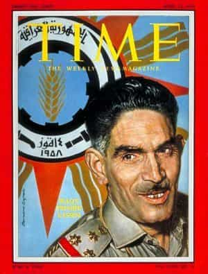

Quintus can be found at qcurtius.com. He is the author of the books On Duties, Thirty Seven, Sallust: The Conspiracy Of Catiline And The War Of Jugurtha, and other books. His work has been reviewed at Taki's Magazine. He can be followed on Twitter


The recent coup attempt several days ago in Turkey failed for several reasons. Chief among them were the inability of the coup plotters to secure the support of key military figures, as well as their failure to arrest the head of state himself.
But coups have succeeded in the Middle East many times before, and it may be useful for us, as students of history, to observe the differences between successful and unsuccessful coups. Almost exactly 58 years ago (July 14, 1958) the monarchy in Baghdad was overthrown in a coup that had significant repercussions for Iraq’s future. Readers may not be familiar with the details, so we will review them here.
Iraq in 1958 was ruled nominally by a Hashemite monarchy. Its face to the world was Nuri Said, a British-backed politician who served eight terms as Prime Minister. As a practical matter, the country was a protectorate of Britain. But times were changing. Local nationalisms were beginning to assert themselves in the region and around the world. Former colonial dependencies were no longer content to move within the orbit of their patrons.
Abd al-Karim Qasim
In Egypt, the Arab nationalist Gamal abd al-Nasser was making waves and influencing the politics of all his neighbors. Both the United States and the Soviet Union vied with each other for influence in the region. In 1955 the US formed the “Baghdad Pact,” a loose coalition of anti-communist states along the Soviet Union’s Middle Eastern flank.
Among the people, the monarchy was widely seen as corrupt, ineffective, and as a foreign tool. A small group of military leaders calling themselves the “Free Officers” decided to remove the monarchy and establish a republic. Two men were significant: Abd al-Karim Qasim and Abd al-Salam Arif.
Planning for the coup began in earnest after the revolt in Lebanon against a pro-West regime there. The general plan was for Arif to move his Nineteenth Brigade into Baghdad and occupy key points in the city; Qasim was to hold back in reserve, in case reinforcements were needed. Early in the morning of July 14, 1958, Arif moved his tank units into the city and occupied the major government buildings. He also seized the radio station and all other communication centers to prevent the “wrong” stories from getting out.
Arif also personally broadcast a communique to the nation. The gist of his message was that there would be an end to imperialism and corruption, and that Iraq would move towards a more just society were everyone had more opportunity. He also promised that there would soon be elections for a new president.
Arif sent troops to the royal palace and to the residence of Nuri Said. It is not clear what his intentions were with regard to these people; he may have wished to exile them, as Nasser in Egypt did with King Farouk. The military guard units of the king and the crown prince did not resist. They had been told by the king to stand down; he lacked the will to fight for his throne, and likely expected to be treated with respect.
Abd al-Salam Arif
If so, he was mistaken. Arif’s units dragged the royal family into the palace courtyard and shot them. Politics in Iraq have never been a gentleman’s sport.
The plotters were less successful in capturing Nuri Said. He slipped away in the confusion, and was heading for the border. Disguised in woman’s clothes, he made the mistake of stopping in a Baghdad marketplace before setting out on his journey. Someone recognized him on July 15, and he was shot; his body was quietly buried that night.
Qasim now (noon on July 14) began to move his own forces into Baghdad. At this point the plotters did not even have the support of most of the army. But their failure to rally to the side of the king meant that their passivity helped the plotters. Iraq’s most influential neighbor, Jordan, also wavered, unsure of what to do. This paralysis of action by most of the army and by key foreign players worked to the Free Officers’ advantage.
Things got uglier soon after. Arif began to encourage the public to hunt down spies and “traitors,” and this was like pouring gasoline on an active fire. All sense of decency and restraint vanished as angry mobs sought out enemies real and imagined. Some ministers hiding out in the Baghdad Hotel were lynched by mobs; Nuri’s body was dug up by zealots and mutilated, then dragged through the streets. A regent of the king, Abd al-Ilah, was murdered, dragged through the streets, and hung from a gate in the Ministry of Defense.

A curfew was soon imposed, but the damage to the new government’s public image had been done. And violence usually begets more violence. Qasim became the new prime minister and withdrew Iraq from the Baghdad Pact.
Over time, divisions within the new government would become more pronounced. Ba’athists, Iraqi nationalists, and communist-leaning figures would compete with each other for influence. Qasim and Arif would eventually become rivals; in 1963 Qasim himself was overthrown and executed in a Ba’athist coup.
It seems clear that the 1963 coup was carried out with at least some help from the CIA. The coup plotters were conveniently provided with lists of communists and leftists, a fact that made their arrests and executions that much easier. In any case, Iraq’s 1958 coup was the first in a series of coups that would not end until the advent of Saddam Hussein in 1968.
Read More: Sweden Showcases The War Of Two Nationalist Narratives